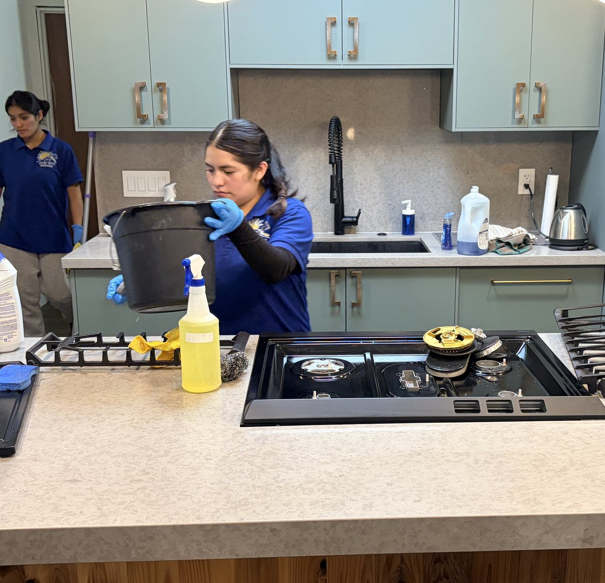

License
Images are provided for viewing on this website. Reuse, republication, resale, scraping, syndication, training, or derivative commercial use is not granted without written permission.
Image rights
This page describes how website photography and cleaning portfolio images on Sun Ray Cleaning Services pages may be used, credited and requested.

Rights statement
Unless a page says otherwise, photos and portfolio images on this website are owned by Sun Ray Cleaning Services or published with permission for Sun Ray Cleaning Services marketing, service-area, review, and educational use.
Images are provided for viewing on this website. Reuse, republication, resale, scraping, syndication, training, or derivative commercial use is not granted without written permission.
When permission is granted, credit should name Sun Ray Cleaning Services and link to the page where the image appears unless a different credit is approved in writing.
To ask about using a photo, send the image URL, intended use, publication location, duration, and whether the use is commercial or editorial.
How to request use
Most images show real cleaning work, homes, rooms, or service context. Sun Ray reviews image requests carefully to protect customer privacy, employee privacy, brand accuracy, and local service context.
Use the contact page or call Sun Ray to request permission, ask about image rights, or report an attribution issue.
Need the business instead?
Tell Sun Ray the city, service type, home size, timing, and cleaning priorities.